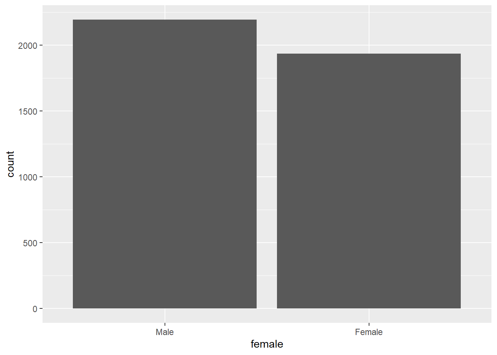

Les inn datasettet abu89.rds med følgende kommando:
abu89 <-readRDS("data/abu89.rds")
Lag et stolpediagram som viser antall menn og kvinner i datasettet med følgende kommando:
ggplot(abu89, aes(x=female))+geom_bar()

For geom_bar() bruker ggplot automatisk antall for y-aksen hvis du ikke skriver noe annet. Merk at koden bare spesifiserer x-variabelen. Da antar ggplot at du vil ha antall observasjoner som høyde på stolpene. I det skjulte bruker ggplot en spesifikasjonen y = ..count.. som altså gir antallet.
Lag plottet på nytt med andeler ved å spesifisere y som ..prop.. og sette group = 1. aes( x = female, y = ..prop.., group = 1 )
Kanskje du heller vil ha prosent fremfor andeler? Prøv følgende: spesifiser y som y = ..prop..*100 og så endre tekst på y-aksen med labs(). Altså multiplisere andelen med 100.
For å lagre et plot til disk slik at du lett kan bruke det i f.eks. et Word dokument bruker vi funksjonen ggsave(). Inni parentesen skriver du filbanen der du vil lagre plottet, inkludert filhale for det formatet du vil bruke. Det mest praktiske vil ofte være png-format, så da slutter filnavnet på .png, så vil ggsave lagre i det formatet. Hvis du vil ha plottet i pdf-format lar du tilsvarende filnavnet slutte på .pdf.
ggsave() lagrer det plottet som er i plotvinduet i Rstudio hvis du ikke ber om noe annet. En bedre løsning er å legge hele plottet i et eget objekt og så angi det objektet i ggsave(). Noe slikt:
Lagre figuren til output-mappen i png-format med funksjonen ggsave() og gi filen et passende navn. For publisering kreves det ofte høy kvalitet på bildefilen, som spesifiseres med antall piksler angitt ved dpi. Forhåndsvalgt oppløsning for ggsave er dpi=300 som stort sett er tilstrekkelig. Hvis du trenger annen oppløsningen kan du spesifisere dpi høyere eller lavere.
Lag en høyoppløslig versjon ved å legge til dpi = 600 inni parentesen for ggsave() og gi filen et passende navn.
Lag en tilsvarende figur som i første oppgave, men nå for klassebakgrunn: Bruk samme kode, men bytt ut variabelen female med klasse89.
I mange tilfeller vil dataene allerede være aggregert til en tabell. R vil ikke vite forskjell på dette av seg selv. Da må du spesifisere at y-variabelen er kolonnen med høyden på stolpen. Prøv med datasettet til eksempel 3 til kapittel 1 i læreboka: music <- read.csv(“data/chapter_1/eg01-03music.csv”)
Bruk ggplot som før, men med nye variabelnavn. For linjen med geom_bar() må du nå spesifisere at ggplot ikke skal regne ut noe selv slik den ellers gjør. geom_bar(stat = “identity”)
1.5 Histogram 16. Bruk datasettet abu89 og lag et histogram som viser fordelingen av timelønn (time89). Tips: du må altså bytte ut variabelnavn og bruke en annen geom_*, nemlig geom_histogram() 17. Endre antall stolper ved å sette bins = og vurder om grover/fine inndeling er best. 18. Gjør om histogrammet til å vise tetthet ved å sette y = ..density.. 19. Legg til titler på aksene som du synes er best. 20. Gjør egne vurderinger på endelig utseende på Når du er fornøyd lagrer du plottet i output-mappen med et passende navn i png-format.
1.6 Boksplot 21. Lag et boksplot for timelønn. Endre da koden ved å bruke geom_boxplot() i stedet for geom_histogram() som du brukte over. Men sett nå time89 som y i stedet for x. 22. Boksplot er mest interessant for å sammenligne grupper. Lag et boksplot for hver verdi av klasse. Inni aes() setter du x = klasse89.
1.7 Tidsserieplot Noen data er tidsserier der vi ønsker å se utvikling over tid. Et dagsaktuelt tema er overdødelighet i ulike land i på grunn av Covid-pandemien. Prosjektet Human Mortality Database (https://www.mortality.org/ ) har laget et datasett som heter Short-term Mortality Fluctuations (STMF) som gir totale dødelighetsrater per uke fra år 2000 og fremover for 38 land. (I skrivende stund tilgjengelig frem til uke 43 i 2021). Et tilrettelagt datasett er lastet opp i Canvas med filnavnet stmf_prep.rds. Les inn datasettet med readRDS() og lagre det i et objekt stmf. For mer informasjon om datasettet, se hjemmesiden. Når man sammenligner total dødeligheten for land med tidligere år, så vil vi kunne se om siste år har en overdødelighet sammenlignet med disse. Datasettet inneholder tall for både totalt og for menn, kvinner, og ulike aldersgrupper per land. Det kan være lurt å ikke plotte alt på en gang. Lag først et plot for kun Norge siste to år. Bruk filter() til å velge begge kjønn, kun Norge og siste to år, og lagre det som et nytt objekt slik: nor <- stmf %>% filter(sex == “b”, age == “Total”, country_code == “NOR”, year >= 2020)
Da kan du lage et linjediagram slik: ggplot(nor, aes(x = week, y = rate_total, col = as.factor(year))) + geom_line()
Merk at fargen settes etter variabelen year, og den er satt som as.factor() for å markere at det er kategorisk og ikke kontinuerlig fargeskala. 23. Kan man si så mye om utviklingen? Hva bør man sammenligne med? 24. Hvorfor tror du det kan være lurt å se på total dødelighet fremfor døde direkte av Covid?
Juster koden over slik at du får med alle år for Norge og lag linjediagrammet på nytt. I parentesen for aes() legger du til group = year for å få en linje per år. Uten det blir det bare tull. Variabel yr_ind er en kategorisk variabel for å markere årene 2020 og 2021. I aes() legger du også til color = yr_ind for å si at det skal være forskjellig farge etter denne indikatoren. Lag litt tykkere linjer ved å spesifisere size = .9 inni parentesen for geom_line(). Legg så til en ny linje (sett + før linjeskift) i koden for å bestemme fargene manuelt slik:
scale_color_manual(values = c(“gray70”, “red”, “blue”), labels = c(“2000-2019”, “2020”, “2021”)) Du skal nå få et plot der alle årene før 2020 er grå, mens 2020 og 2021 er henholdsvis rød og blå. Argumentet labels = er til tegnforklaringen. 25. Hvordan har dødeligheten vært totalt i Norge i 2020 og 2021 sammenlignet foregående år? Kan du tenke deg noen grunner til dette resultatet? Nå kan du plotte flere land og sammenligne utviklingen. For å se hvilke som er tilgjengelige kjør følgende: unique(stmf$country_code) Juster koden du brukte til å lage datasettet for kun Norge slik at du får med fire valgfrie land. Du kan bruke %in% c(…) for velge flere verdier på landvariabelen. Her er et eksempel for å velge kun nordiske land: filter(country_code %in% c(“NOR”, “SWE”, “DNK”, “FIN”)) Nå kan du bruke samme kode for plottet, men legg til nederst (husk + før linjeskift) følgende: facet_wrap(~country_code) Denne koden gir et panel med et plot for hvert land slik at du lettere kan sammenligne. Hvis det er stor forskjell på nivået kan du la y-skalaen variere mellom landene ved å legge til scales = “free” inni parentesen for facet_wrap(). 26. Hvordan har dødeligheten vært i Norge under pandemien sammenlignet med de andre landende du valgte? 27. Gjør sammenligningen på nytt, men velg en annen aldersgruppe i stedet for totalt. 28. Bruk det du har lært om labs() og theme_*() til å gjøre plottet penere og lagre i output-mappen. Du kan også flytte tegnforklaringen ved å legge til følgende: theme(legend.position = “top”)